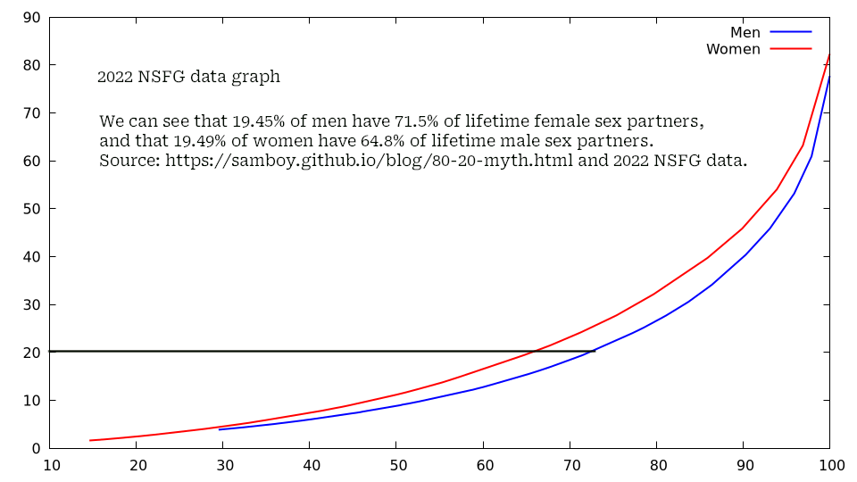

Sam Trenholme’s blog

2025 in summary
December 28, 2025
I summarize 2025 and look at a Substack which refutes pretty much all of the lies Incel/2025 in summary

The late Charlie Kirk
In 2025, I have come to realize just how hateful and vile the left wing media has become. As just one example, Charlie Kirk was assassinated in cold blood for his beliefs, and the left wing. even mainstream leftist newspapers, either overtly or covertly celebrated his death.
The left wing’s hatred of men, especially white men, is pretty disgusting. Just one example from this week: “female readers [have] the fantasy of opting out of unpredictable and potentially violent human men and going for fairies or gentle blue aliens instead”.
In terms of my personal life, I moved out of the United States and now live in Mexico. My daughter is learning Spanish and I now have a girlfriend. I am really healing in Mexico from the hatred directed towards men, in particular white men, by radical left wing misandrist women in the United States.
It’s unfortunate that radical left-wing women hate men who leave Western culture to find love, using the overused and inaccurate stereotype that women in a Latin country live in tin huts and have no real attraction towards the men they are dating.
Incel lies: Refuted

There actually is little polygyny in the real world
Incels and “Red Pill” men claim there is widespread polygyny (i.e. few men with many female sex partners). However, the evidence doesn’t show that. The Nuance Pill has posted a lot of articles using extensive research to show that Incels are spreading lies. To wit:
-
While relatively few people are promiscuous, the rates are the same for women and men. Also, STD rates confirm people don’t lie on those surveys.
-
No, most women don’t sleep around in their 20s and settle in their 30s.
Picture attribution
The picture of Charlie Kirk was taken by Gage Skidmore, is available under a CC 4.0 License, and it has been altered for this blog.